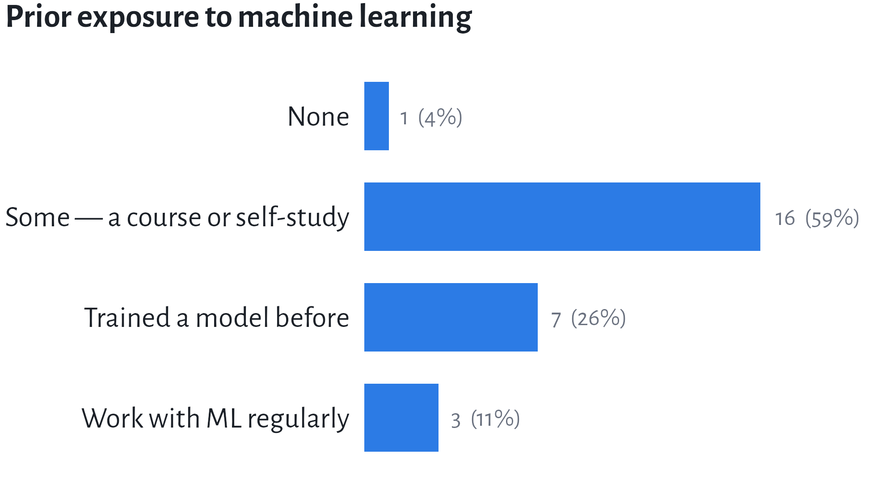
An introduction
Institute of Archaeology, Czech Academy of Sciences, Brno
14. 9. 2026
| 1 | Welcome · who is in the room | |
| 2 | What computer vision is | |
| 3 | Discussion 1 — your data, your question | groups 1 & 2 report |
| 4 | The family of tasks | |
| 5 | Discussion 2 — which task, and what does it cost? | groups 3 & 4 report |
| 6 | Two ways of learning: discriminative & generative | |
| 7 | Live demo — zero-shot classification with CLIP | |
| 8 | Discussion 3 — what may you claim? | groups 5 & 6 report |
| 9 | Wrap-up |
Three short discussion rounds. You will be talking for a third of this session.
Use your own material
Where a question says “your data”, use a project you actually work on. If you have nothing to hand, borrow one of the five datasets we work with this week.

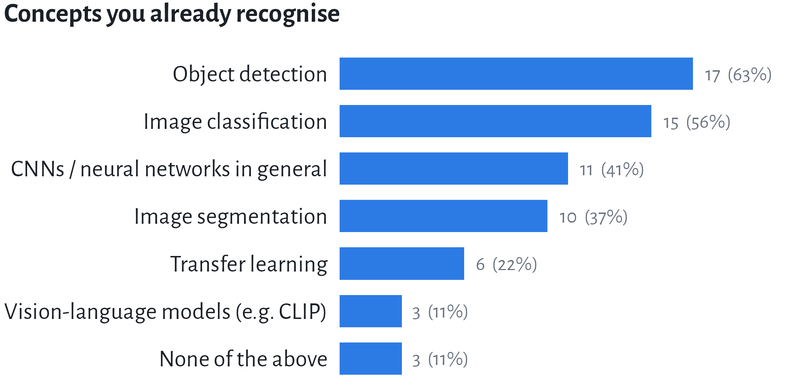
Almost everyone has met machine learning; almost nobody does it. You know the vocabulary of detection and classification — and the two things this week actually turns on, annotation and evaluation, were not on the list.
52%
use an AI coding assistant regularly — but only 19% rate their Python 4 or 5 out of 5.
More of you lean on an assistant daily than feel fluent in the language it writes. That is not a problem to apologise for; it is the working condition of this week, and it is why Monday afternoon is about coding with agents rather than syntax.
81%
have never used an image annotation tool.
Annotation is the single largest cost in every project we will look at, and the one place where your expertise — not the model’s — decides the outcome. Most of the room is about to meet it for the first time on Tuesday.
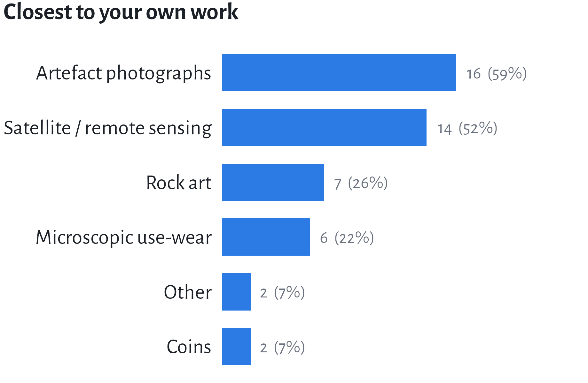
Multiple answers allowed. 48% have no dataset of their own to bring — borrow one of ours.
Confidently apply computer vision algorithms to detect archaeological features and micro-topographical anomalies, drastically reducing the manual processing time.
Better understand the inner workings of a machine learning model, by learning to develop and train it myself.
Even if I don’t have a large corpus, I would like to test AI methods on my dataset by the end of the week.
Computer vision is getting a machine to produce, from an image, the kind of structured description a person would produce by looking at it.
Three things hide in that sentence:
That last one is where archaeology enters. We define what the machine aims at.
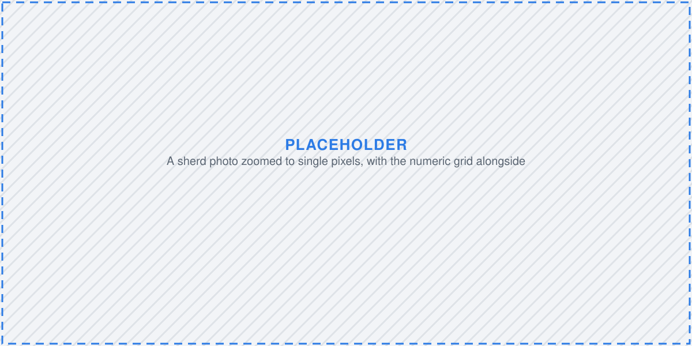
A 4000 × 3000 photograph of a sherd is 12 million numbers per colour channel — 36 million in all. Nothing in that array says sherd, rim, or Neolithic.
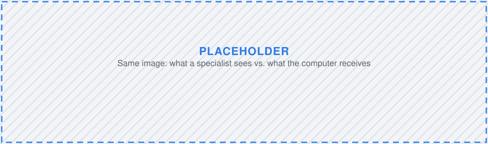
A specialist sees
The computer receives
Bridging that gap with learned statistical regularities is the whole enterprise.
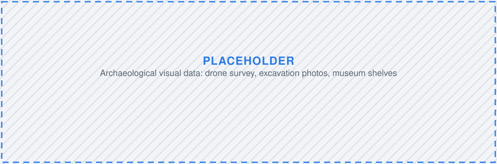
The bottleneck moved from acquiring images to looking at them.
Everything a model outputs is a number you still have to interpret. That interpretation is your job, and it stays your job.
8 minutes in your group. Groups 1 & 2 report back.
Note
Keep your notes. Questions 2 and 3 come back in the next two rounds.
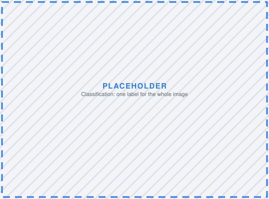
Classification
What is this?
One label per image
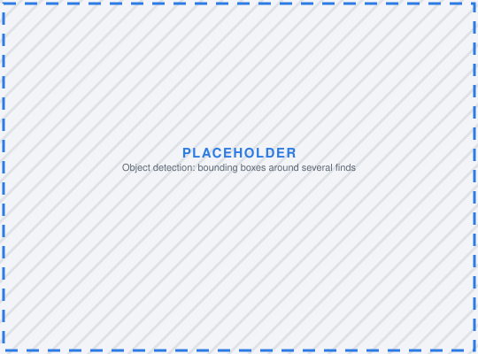
Detection
What, and where?
Boxes + labels
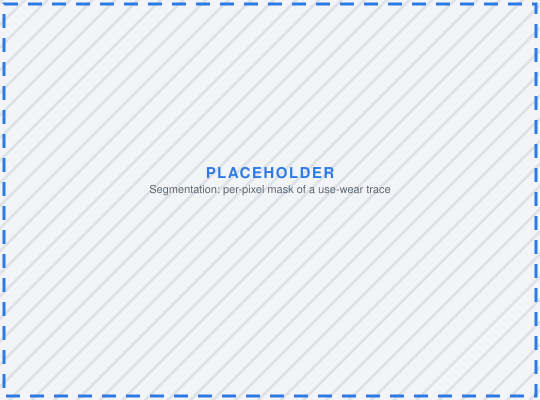
Segmentation
Which pixels?
Per-pixel mask
Keypoints
Where are the landmarks?
Coordinates
The choice is not technical. It follows from the question you asked — and it determines how much annotation you will have to pay for.
| Task | Asked of one coin photograph | Annotation cost |
|---|---|---|
| Classification | Is this an antoninianus? | one label per image |
| Detection | Where is the legend? Where is the portrait? | a box per element |
| Segmentation | Which pixels are corrosion? | a traced outline per region |
| Keypoints | Where are the die-axis markers? | a few points per image |
| Retrieval | Which coins in the corpus look like this one? | none — but you need a corpus |
Cost rises steeply down the table. Start with the cheapest task that answers your question.
| Shape | Published examples |
|---|---|
| Classification | decorated ceramic typology from photographs (Pawlowicz and Downum 2021); amphora and faience fabrics (Santos et al. 2024); Celtic coin classification and die studies (Deligio et al. 2024) |
| Detection | potsherds in high-resolution drone imagery (Orengo and Garcia-Molsosa 2019); burial mounds in historical maps (Berganzo-Besga et al. 2023); archaeological objects in LiDAR (Verschoof-van Der Vaart and Lambers 2019); illustrated objects in scanned catalogues (Klein et al. 2025) |
| Segmentation | hollow roads traced in LiDAR (Verschoof-van der Vaart and Landauer 2021); agrarian field systems from satellite imagery (Küçükdemirci 2025); anomalies in geophysical survey images (Küçükdemirci and Sarris 2020) |
| Retrieval | 3D matching and retrieval of objects across collections (Jiménez-Badillo et al. 2023) |
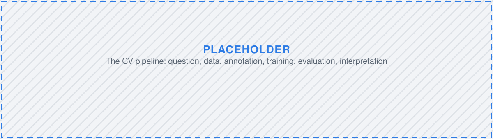
| Stage | What you decide | When |
|---|---|---|
| Question | what would count as an answer? | today |
| Data & annotation | classes, vocabulary, licences | Tuesday |
| Pre-processing | scale, colour, augmentation | Wednesday |
| Training | architecture, transfer learning | Thursday |
| Evaluation | which errors you can live with | Thursday–Friday |
| Interpretation | what you may actually claim | Friday |
Projects fail at stage one or two. Almost never at stage four.
Tractable
Not (yet) tractable
The test: could a competent colleague answer it from the image alone, consistently, in two seconds? If not, a model will not either — it will simply be confident about it.
8 minutes. Groups 3 & 4 report back.
Take the question your group settled on in round one.
Discriminative
Learns the boundary between classes.
Given this image, what is the label?
Answers questions about existing data.
Generative
Learns what the data look like.
What does an image of this class look like?
Produces new data.
A discriminative model can tell a Neolithic pot from an Iron Age one. A generative model can draw you a Neolithic pot. Only one of them has ever seen the pot you care about.
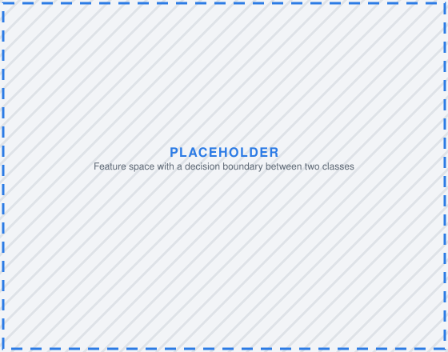
Discriminative — draw a line separating the classes. Anything far from the line is ignored.
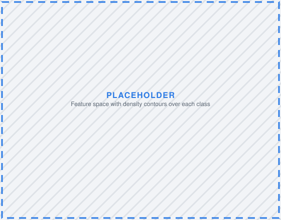
Generative — model where each class lives. You can then sample new points from it.
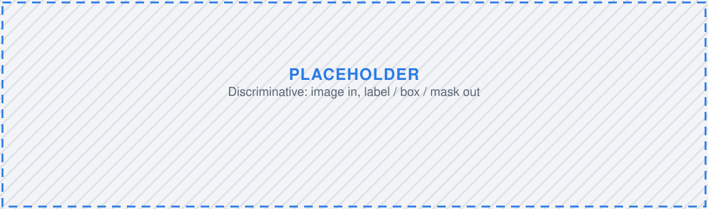
Common thread: the model points at evidence that already exists.
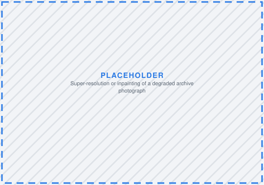
Restoration
Sharpening or completing degraded archive imagery
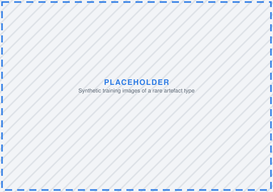
Synthetic training data
Manufacturing examples for rare classes
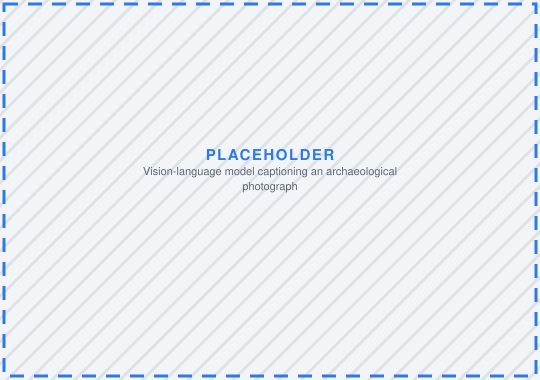
Vision-language models
Describing an image, answering questions about it
Common thread: the model produces something that was not in the record.
| Discriminative | Generative | |
|---|---|---|
| Learns | the boundary between classes | the distribution of the data |
| In → out | image → label / box / mask | prompt or noise → image / text |
| Typical models | CNNs, YOLO, ResNet, SAM | diffusion, GANs, VAEs, VLMs |
| Needs | labelled examples | many examples; labels optional |
| Fails by | confident wrong labels | plausible fabrication |
| Evidential status | a measurement to verify | an illustration or a hypothesis |
The asymmetry that matters
A discriminative error is visible — the box is in the wrong place. A generative error is invisible — a fabricated rim looks exactly as convincing as a real one.
The distinction is not a rigid taxonomy of architectures. It is about what the model outputs, and what you are entitled to claim from it.
That is exactly what the next eight minutes are for.
You give the model an image and a list of candidate descriptions in plain English. It tells you which description fits best. No training. No annotation.
Watch first — you will run this yourself later in the week.
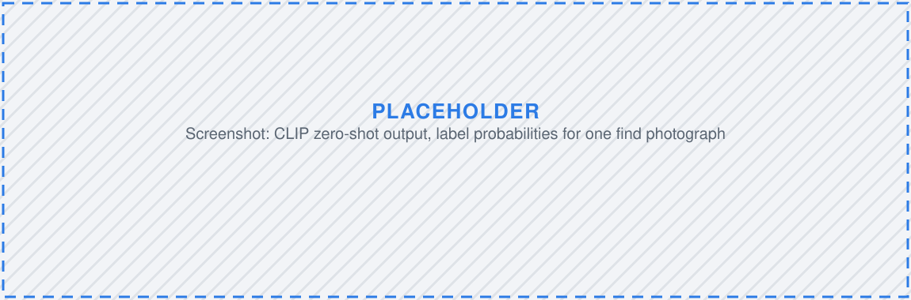
Important
Zero-shot is a superb way to explore a collection. It is a poor way to report a number.
6 minutes. Groups 5 & 6 report back.
A colleague reports: “Our model detected 340 previously unrecorded burial mounds in the survey area.”
Groups 5 & 6, then everyone in one sentence:
Note
These become our working problems for the week. If your question is tractable with one of our five datasets, we will try to get you to an answer by Friday — and you can present it on Tuesday afternoon.
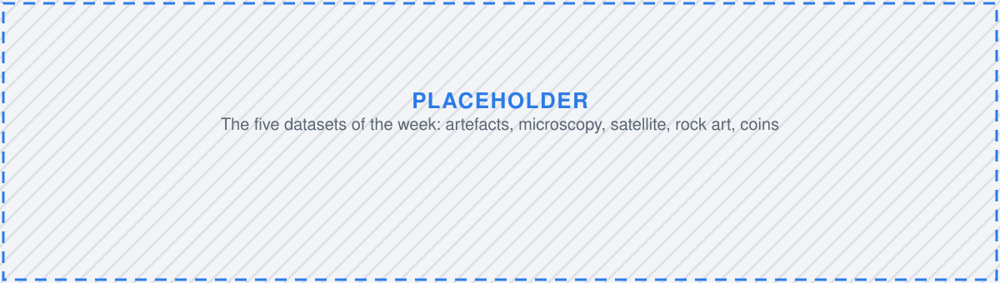
| Dataset | Day | Task shape |
|---|---|---|
| Artefacts | Tuesday | classification & detection |
| Microscopy — use-wear | Wednesday | segmentation |
| Satellite imagery | Thursday | detection |
| Rock art | Thursday | to be confirmed |
| Coins | Friday | combined methods, vision-language models |
Setting up the environment — Google Colab and the tools we use for the rest of the week.
The MAIA COST Action maintains a shared, open Zotero library on AI in archaeology — zotero.org/groups/5991067
Start here
Worked case studies
Computer Vision in Archaeology · Brno 2026